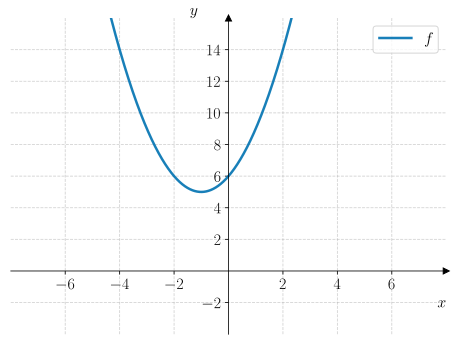

15. Andregradslikninger#
Kunne løse andregradslikninger grafisk, algebraisk og med programmering.
Kunne bruke \(abc\)-formelen til å løse andregradslikninger
Kunne bruke diskriminanten til å avgjøre hvor mange løsninger en andregradslikning har.
Som vi så med lineære likninger, kan vi bruke flere løsningsstrategier for å løse andregradslikninger. Strategier vi skal se på er:
Grafisk løsning
Algebraisk løsning
Løsning med programmering
Grafisk løsning#
Når vi løser en andregradslikning grafisk, tegner vi grafene til funksjonsuttrykket på venstre og høyre side av likningen, så finner vi skjæringspunktene mellom grafene. Da er det \(x\)-koordinatene til skjæringspunktene som er løsningene til likningen.
Eksempel 1#
Løs likningen
Vi tegner grafene til funksjonsuttrykkene på venstre og høyre side av likningen:
Det gir oss følgende figur:
Vi ser at grafene skjærer hverandre i to punkter: \((-1, 1)\) og \((1, 3)\). Det er \(x\)-koordinatene til disse punktene som løser likningen. Det første punktet gir oss \(x = -1\). Det andre punktet gir oss \(x = 1\). Dermed er løsningen av likningen
Underveisoppgave 1#
I figuren høyre vises grafene til
Bruk figuren til å løse likningen
Vi ser at grafene skjærer hverandre i punktene \((-2, -7)\) og \((1, -1)\). Løsningen av likningen er \(x\)-koordinatene til disse punktene som gir løsningen
Vi kan også løse dette med digitale hjelpemidler. La oss se på et eksempel med graftegneren i Geogebra.
Eksempel 2#
En andregradslikning er gitt ved
Løs likningen grafisk.
Nedenfor ser du en gif som viser hvordan man løser likningen med grafvinduet i Geogebra. Vi trykker på  (Skjæring mellom to objekt) etterfulgt av å trykke på hver graf for å finne skjæringspunktet.
(Skjæring mellom to objekt) etterfulgt av å trykke på hver graf for å finne skjæringspunktet.

Skjæringspunktene mellom de to grafene er \((3, 0)\) og \((-1, 8)\). Løsningen av likningen er \(x\)-koordinatene til skjæringspunktene som betyr at løsningen av likningen er
Underveisoppgave 2#
En andregradslikning er gitt ved
Løs likningen grafisk.
Vi skriver inn venstresiden og høyresiden i av likningen i Geogebra for å tegne grafene til de to funksjonene. Deretter bruker vi “skjæring mellom to objekt” for å finne skjæringspunktene mellom grafene. Se figuren nedenfor.

Skjæringspunktene mellom grafene er \((1, 1)\) og \((4, 7)\). Det er \(x\)-koordinatene til disse punktene som er løsningen av likningen. Dermed er løsningen av likningen
Algebraisk løsning#
Når vi løser en andregradslikning algebraisk, så kan vi alltid faktorisere andregradspolynomet til nullpunktsform. Men her skal vi se at det også finnes noen spesielle andregradslikninger der vi kan faktorisere direkte. Vi skal også se at det finnes en helt generell formel for løsningen av en andregradslikning, som kalles for \(abc\)-formelen.
Spesielle Andregradslikninger#
Produktregelen#
Når vi har faktorisert andregradspolynomer til nullpunktsform og lest av nullpunktene, har vi i prinsippet brukt det som kalles for produktregelen for likninger:
Setning: Produktregelen#
Hvis \(A\) og \(B\) er to tall og
så er
La oss nå se hvordan vi bruker produktregelen i praksis:
Eksempel 3#
Løs likningen
Vi kan bruke produktregelen ved å tenke på hver faktor som to tall \(A\) og \(B\):
Altså står det egentlig bare \(A \cdot B = 0\), som betyr at
Underveisoppgave 3#
Løs likningen
Vi bruker produktregelen ved å tenke på hver faktor som to tall \(A\) og \(B\):
som gir oss
som vi skriver om til
Uten konstantledd#
Når et andregradspolynom mangler konstantleddet, kan vi faktorisere det direkte og bruke produktregelen:
Eksempel 4#
Løs likningen
Vi faktoriserer ut en faktor \(x\) fra hvert ledd:
Så bruker vi produkteregelen:
som vi skriver om til
Underveisoppgave 4#
Løs likningen
Vi faktoriserer ut en faktor \(x\) fra hvert ledd:
Deretter bruker vi produktregelen:
som betyr at
Uten lineært ledd#
Når et andregradspolynom mangler det lineære leddet \(bx\), så kan vi bruke konjugatsetningen eller bare ta kvadratroten på hver side av likningen:
Eksempel 5#
Løs likningen
Vi skriver om likningen
Deretter kan vi ta kvadratroten på hver side av likningen. Men da får vi to muligheter:
Dette gir mening siden både \((-3)^2 = 9\) og \(3^2 = 9\). Dermed er løsningene av likningen
Underveisoppgave 5#
Løs likningen
Vi skriver om likningen $\( x^2 - 49 = 0 \liff x^2 = 49. \)$
Deretter kan vi ta kvadratroten på hver side av likningen:
Altså er løsningen
\(abc\)-formelen#
Vi har tidligere sett at vi kan faktorisere et andregradspolynom \(ax^2 + bx + c\) ved å første skrive det om til ekstremalpunktsform med fullstendig kvadraters metode, og deretter skrive det om til nullpunktsform med konjugatsetningen. Det lar oss bestemme nullpunktene som er det samme som å løse likningen \(ax^2 + bx + c = 0\). Det er naturlig å lure på om vi kan løse dette én gang for alle, uten å måtte utføre alle disse stegene hver gang. Det kan vi, og det gir oss en formel som kalles for \(abc\)-formelen:
Setning: \(abc\)-formelen#
Løsningen til en andregradslikning

er gitt ved

Vi starter med andregradslikningen
Målet vårt er å skrive om andregradsuttrykket til nullpunktsform.
Symmetrilinja til andregradsuttrykket er
som betyr at vi kan om uttrykket til ekstremalpunktsform:
Setter vi dette lik null får vi:
Så tar vi kvadratroten på hver side av likningen:
som gir
Nå gjenstår det bare å finne et uttrykk for \(y_0\) uttrykt ved \(a\), \(b\) og \(c\). Vi vet at \(y_0\) er funksjonsverdien til andregradslikningen når \(x = x_0 = -\dfrac{b}{2a}\):
Setter vi inn dette i uttrykket for \(x\) får vi
I oppgavene skal du få utlede \(abc\)-formelen. For nå, la oss se på hvordan vi bruker den.
Eksempel 6#
Løs likningen
Fra likningen kan vi lese av at koeffisientene er
Vi setter inn disse i \(abc\)-formelen som gir:
Vi regner ut de to mulige løsningene, en med “\(+\)” og en med “\(-\)” som gir
Nå kan du prøve deg!
Underveisoppgave 6#
Bruk \(abc\)-formelen til å løse likningen
Vi bruker \(abc\)-formelen med koeffisientene \(a = 1\), \(b = -3\) og \(c = -4\):
Så regner vi ut de to mulige løsningene, en med “\(+\)” og en med “\(-\)”:
Antall løsninger#
Vi har tidligere sett at en andregradsfunksjon kan ha ingen, ett eller to nullpunkter. Med \(abc\)-formelen har vi et nytt verktøy for å avgjøre hvor mange nullpunkter en andregradsfunksjoner har – og dermed hvor mange løsninger en andregradslikning har.
Diskriminanten og antall løsninger#
En andregradslikning på formen
har løsningen
Vi kaller \(D\) for diskriminanten. Ut ifra diskriminanten kan vi se hvor mange løsninger likningen har:
Hvis \(D < 0\), har likningen ingen løsninger.
Hvis \(D = 0\), har likningen én løsning.
Hvis \(D > 0\), har likningen to løsninger.
Se figuren nedenfor.

Fig. 15.1 Hvis \(D < 0\), har likningen ingen løsninger. Hvis \(D = 0\) har likningen én løsning. Hvis \(D > 0\) har likningen to løsninger. Dette tilsvarer at grafen til en andregradsfunksjon enten ikke skjærer \(x\)-aksen, skjærer den i ett punkt eller skjærer den i to punkter.#
Eksempel 7#
Bestem hvor mange løsninger likningen nedenfor
Vi regner ut diskriminanten med \(a = 1\), \(b = -4\) og \(c = 4\):
Siden \(D = 0\), har likningen én løsning.
Underveisoppgave 7#
Bestem hvor mange løsninger likningen nedenfor har.
Ingen løsninger.
Vi regner ut diskriminanten med \(a = 1\), \(b = 2\) og \(c = 8\):
Siden \(D < 0\), har likningen ingen løsninger.
CAS#
Å løse andregradslikninger med CAS gjøres på samme måte som for lineære likninger.
Utforsk 1#
Nedenfor vises en gif som viser hvordan man løser en andregradslikning med CAS:

Fig. 15.2 viser hvordan man løser en andregradslikning med CAS. Løsningene er \(x = -\sqrt{3} + 2 \or x = \sqrt{3} + 2\).#
Bruk CAS til å løse likningen som er vist i gif-en.
Bruk CAS til å løse likningen

Bruk CAS til å løse likningen
Hvorfor tror du svaret blir som det blir?

Det betyr at likningen ikke har noen løsning. Vi kan se dette ved å tegne grafen til \(f(x) = x^2 + 2x + 6\) og se at den aldri skjærer \(x\)-aksen:
{kind=link}

Løsning med programmering#
Når vi løste lineære likninger med programmering, skrev vi et program som systematisk prøvde ut mange heltallige verdier for \(x\) og sjekke om likningen var oppfylt. Dersom likningen var oppfylt, skrev programmet ut verdien av \(x\) som en løsning. Denne strategien lar seg naturlig oversette direkte til andregradslikninger også.
Utforsk 2#
Nedenfor vises et eksempel på et program som løser en andregradslikning ved å prøve ut heltallsverdier for \(x\).
Bruk CAS til å bestemme hva programmet skriver ut når det kjøres.
Skriv inn svaret ditt nedenfor og sjekk om du får riktig svar.
Endre på programmet slik at det løser likningen
Sjekk om du får samme svar med CAS.
1for x in range(-10, 11):
2 if x**2 - 3*x - 4 == 0:
3 print(x)